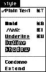

|
|
Standard Characters and Text Style in MenusYou can use several standard characters to indicate additional information in menus. Don't use arbitrary symbols in menus because they may confuse people. The standard characters include checkmarks, dashes, and ellipsis characters. In a Style menu, you can display menu item names in different text styles. Figure 4-16 shows a menu with text styles and a checkmark asan indicator. Figure 4-16 A menu with text styles and an indicator  Subtopics |